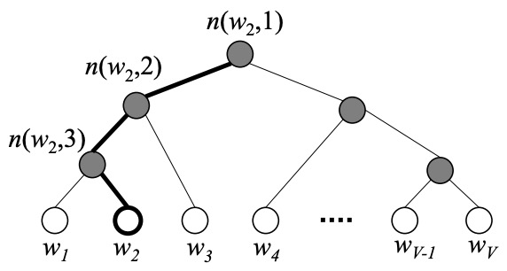

3. Word2Vec
接下文：Neural NLP：词向量，为解决NNLM训练速度慢的问题，Tomas Mikolov的论文[6]、[7]在NNLM的基础上上，对运算效率进行了优化，提出了Word2Vec模型。
3.1 Word2Vec模型
Word2Vec是轻量级神经网络，模型仅仅包括输入层、隐藏层和输出层，与NNLM相比较，word2vec去掉了耗时的（隐含层）非线性激活函数、输入与输出间的直接连接（direct
connections），并优化了输出层SoftMax函数。根据模型框架的不同，Word2Vec主要包括了CBOW和Skip-gram模型。
指定窗口大小（例如，[—,—,$\star$,—,—]，窗口大小为5，中心词$\star$和上下文词汇-），通过滑动窗口法，生成数据集当中心词位于边缘时，窗口大小减小，如下图所示：
CBOW
连续词袋模型Continuous Bag-of-Words（CBOW），其训练样本为(data:[—,—,—,—]，label:$\star$)，即每滑动一次窗口生成一个训练数据。设第$t$个中心词为$w_{t}$，窗口内其他词为$\text{context}(w_{t})$，CBOW的核心思想为，运用上下文预测中心词。
如上，网络分为三层：
- input layer：
- 输入为One-hot embedding，通常为$B\times C \times V$的矩阵$X$，其中$B$为batch size，$V$为词典尺寸，$C$为上下文大小（context size，一般为窗口大小减一）；
- hidden layer：
- $\mathbf{W}$为embedding matrix（$V \times d$），其第$i$行$\mathbf{W}_i$代表$i$的word vector；
- 输出$\mathbf{h}$是context word vectors $\mathbf{v}_{w}$的均值：$$ \begin{aligned} \mathbf{h} &=\frac{1}{C} \mathbf{W}^{T}\left(\mathbf{x}_{1}+\mathbf{x}_{2}+\cdots+\mathbf{x}_{C}\right) =\frac{1}{C}\left(\mathbf{v}_{w_{1}}+\mathbf{v}_{w_{2}}+\cdots+\mathbf{v}_{w_{C}}\right)^{T} \end{aligned} $$
- Output layer：
- 隐藏层到输出层的权重矩阵为$\mathbf{U}$（维度为$d \times V$），其将$\mathbf{h}$投影至输出向量：$\mathbf{y}=\mathbf{h}\mathbf{U}$；
- 优化的SoftMax层，输出条件概率：$\hat{P}\left(w_{t} \mid \text{context}(w_{t})\right)={\text{SoftMax}(\mathbf{y})}_{w_{t}}$。
同样，模型的训练基于极大似然估计，即优化模型参数使训练集的log-likelihood最大，等价于使用cross-entropy损失函数：$$
L=- \frac{1}{T} \sum_{t=1}^T \log \hat{P}(w_{t} \mid \text{context}(w_{t})）
$$其中，label的通常为$B\times 1$的矩阵，$\theta$为模型参数， $R(\theta)$为正则项。若使用批量梯度下降：
$$
\theta \leftarrow \theta-\varepsilon \frac{\frac{1}{B}\sum_{t}\partial \log \hat{P}\left(w_{t} \mid \text{context}(w_{t});\theta\right)}{\partial \theta}
$$
Skip-gram
Skip-gram，其训练样本为(data:[[$\star$],[$\star$],[$\star$],[$\star$]]，label:[[—],[—],[—],[—]])，即每滑动一次窗口生成$N-1$($N$为窗口大小)个训练数据。设第$t$个中心词为$w_{t}$，窗口内其他词为$\text{context}(w_{t})$，CBOW的核心思想为，运用中心词预测上下文。
网络结构和CBOW基本相同，除了输入部分仅为中心词的one-hot。同样采用极大似然估计（即，cross entropy loss）为优化目标：$$
\frac{1}{T} \sum_{t=1}^{T} \sum_{j \in \text{context}(w_t)} \log p\left(w_{t+j} \mid w_{t}\right)
$$
3.2 SoftMax
输出层的SoftMax，对于每个训练数据，都需要计算词表中所有词的SoftMax概率，然而词表较大，导致计算复杂（$O(V)$）。
Hierarchical Softmax
分层Softmax（Hierarchical softmax ）是一种计算softmax的高效方式，简而言之，其通过构造Huffman树，将复杂的概率归一化问题，转化为一系列二分类的条件概率相乘的形式，将目标概率的计算复杂度从$O(V)$降低到了$O(\log V)$。

如上图，Hierachical Softmax是Huffman树（二叉树，注*）结构，每个非叶子节点是二分类器（$V-1$个，因为节点只有0、2分叉），每个叶子节点对应词表中的单词（$V$个），该Huffman树基于训练语料，根据词频而建立。
对于huffman树中的某个叶子结点，假设其对应词典中的$w$，预设如下变量：
- $\mathbf{P}^w$：从根节点到叶节点$w$的路径。例如图中，$\mathbf{P}^{w_2}=[p^{w_2}_1,p^{w_2}_2,p^{w_2}_3,w_2]$，其中p^{w_2}_1为根节点；
- $l^w$：路径$\mathbf{P}^w$中包含的节点个数；
- $\mathbf{D}^w$：路径$\mathbf{P}^w$对应的霍夫曼编码（$l^w-1$位），左子节点编码为1，右子节点编码为0。例如图中，霍夫曼编码为$[d^{w_2}_2,d^{w_2}_3,d^{w_2}_4]=[1, 1, 0]$，其中$d^{w_2}_4]$对应叶子节点的编码；
- $\Theta^w$：路径$\mathbf{P}^w$中非叶子结点对应的向量。例如图中，$[\Theta^{w_2}_1, \Theta^{w_2}_2, \Theta^{w_2}_3]$，其中$\Theta^{w}_i$用于非叶子节点处的二分类器。在非叶子节点处定义二分类器（逻辑回归），分到左边为正类，右边为负类（与Huffman编码对应），其分为正、负类的概率为：$$ P\left(d_{j}^{w} \mid \mathbf{h}_{w}, \Theta_{j-1}^{w}\right)=\left\{\begin{array}{ll} \sigma\left((\Theta_{j-1}^{w})^T \mathbf{h}_{w}\right), & d_{j}^{w}=1 \\ 1-\sigma\left((\Theta_{j-1}^{w})^T \mathbf{h}_{w}\right), & d_{j}^{w}=0 \end{array}\right.={[\sigma\left((\Theta_{j-1}^{w})^T \mathbf{h}_{w}\right)]}^{d_{j}^{w}} {[1-\sigma\left((\Theta_{j-1}^{w})^T \mathbf{h}_{w}\right)]}^{d_{j}^{w}} $$其中，$\sigma\left((\Theta^{w})^T \mathbf{h}_{w}\right)= \frac{1}{1+e^{-(\Theta^{w})^T \mathbf{h}_{w}}}$，$\mathbf{h}_{w}$为预测词为$w$时，投影层的输出。
假设根节点表示词典$\boldsymbol{D}$，则第二层的子节点表示$\boldsymbol{D}$的两个子集$\boldsymbol{D}_1$和$\boldsymbol{D}_2$…故从根节点沿着路径$\mathbf{P}^w$传递至叶子结点，表示了类似“决策树”的划分过程，将路径中的预测概率相乘，则得到目标词的条件概率：$$ P(w \mid \text{context}(w))=\prod_{j}^{p^{w}_j \in \mathbf{P}^{w}} P\left(d_{j}^{w} \mid \mathbf{h}_{w}, \Theta_{j-1}^{w}\right) = \prod_{j}^{p^{w}_j \in \mathbf{P}^{w}}{[\sigma\left((\Theta_{j-1}^{w})^T \mathbf{h}_{w}\right)]}^{d_{j}^{w}} + [1-\sigma\left((\Theta_{j-1}^{w})^T \mathbf{h}_{w}\right)]^{1-d_{j}^{w}} $$取对数可得：$$\log P(w \mid \text{context}(w)) = {d_{j}^{w}} \log [\sigma\left((\Theta_{j-1}^{w})^T \mathbf{h}_{w}\right)] + (1-{d_{j}^{w}}) \log [1-\sigma\left((\Theta_{j-1}^{w})^T \mathbf{h}_{w}\right)]$$之后可按照前述的最大似然法（交叉熵损失）进行优化。
注*：Huffman树是带权路径最小（叶结点权重$\times$根叶路径长）的二叉树，根据词频构建的Huffman树，高频词离根结点近，而低频词远，详见这篇博文。
3.3 Negative sampling
用Hierachical SoftMax替代传统的SoftMax，可以提高训练效率；但若预测的目标词$w$是生僻（低频）词，在Huffman树中从根到叶就需走很长的路径。实际训练中，大多采用训练速度更快（词向量质量更高）的负采样（Negative Sampling，NEG）算法。简而言之，NEG使用随机负采样，并训练模型，让正例预测概率大，负例的概率小，从而提升性能与速度。
Noise-Contrastive Estimation
噪声对比估计（Noise-Contrastive Estimation，NCE）算法预设如下变量：
- 数据（经验）分布为$P(w \mid \text{context}(w))$，从中采样一个正确的样本$w$；
- 噪声分布为$Q(w)$（可为任意已知分布，例如均匀分布），从中采样$K$个噪声样本（即相同特征，错误标签）；
则此时混合数据的(未归一化)分布为:
$$ \tilde{P}(u \mid \text{context}(w))=\left\{\begin{array}{ll} \frac{K}{1+K} * Q(u) & \text { if } \quad u \neq w\\ \frac{1}{1+K} * P(u \mid \text{context}(w)) & \text { if } \quad u=w \end{array}\right. \underbrace{=}_{归一化} \left\{\begin{array}{ll} \frac{K Q(u)}{P(u \mid \text{c}(w)) + K Q(u)} & \text { if } \quad u \neq w\\ \frac{P(u \mid \text{c}(w))}{P(u \mid \text{c}(w)) + K Q(u)} & \text { if } \quad u=w \end{array}\right. $$NCE将分母中的$P(u \mid \text{c}(w))$变成可学习的参数，用（逻辑回归等）模型预测结果$\hat{P}(u \mid \text{c}(w))$近似，并通过最小化损失函数，来优化模型，从而避免概率归一的复杂计算：$$ L=-\sum_{w\in T}\left[\log \tilde{P}(u=w \mid \text{c}(w))+\sum_{i=1, u \sim Q}^{K} \log \tilde{P}(u \neq w \mid \text{c}(w))\right]$$
Negative sampling
Negative sampling（NEG）是噪声对比估计（Noise-Contrastive Estimation，NCE）算法的简化，基本思想相同：每采样一个正确的样本，就采样k个噪声样本。不同于NCE，NEG在定义$\tilde{P}(u \mid \text{context}(w))$时，采取了更简单的实现：$$\tilde{P}(u \mid \text{context}(w))=\left\{\begin{array}{ll} \sigma\left((\Theta^{u})^T \mathbf{h}_{w}\right), & u=w \\ 1-\sigma\left((\Theta^{u})^T \mathbf{h}_{w}\right), & u \neq w \end{array}\right.$$其中，$\Theta^{u}$表示词$u$对应的待训练辅助向量（预测不同词，采用不同向量）。在Word2vec中，负样本按词频率（即unigram distribution）采样，即$Q(u)=\frac{\text{count(u)}}{\sum_{w \in V}\text{Count(w)}}$（实际上用了，$Q(u)=\frac{{\text{count(u)}}^{\frac{3}{4}}}{\sum_{w \in V}{\text{Count(w)}}^{\frac{3}{4}}}$），对每个正例，采样$K$（5-20）个反例，此时对应的联合概率为：$$ G(w \mid \text{context}(w)) = \sigma\left((\Theta^{w})^T \mathbf{h}_{w}\right) \prod_{u \in NEG(w)}[1-\sigma\left((\Theta^{u})^T \mathbf{h}_{w}\right)] $$取对数可得：$$ \log G(w \mid \text{context}(w)) = \log [\sigma\left((\Theta^{w})^T \mathbf{h}_{w}\right)] + \sum_{u \in NEG(w)}\log [1-\sigma\left((\Theta^{u})^T \mathbf{h}_{w}\right)] $$之后可按照前述的最大似然法（交叉熵损失）进行优化。可以看出，其最大化$\sigma\left((\Theta^{w})^T \mathbf{h}_{w}\right)$（正样本的概率）的同时，最小化$\sigma\left((\Theta^{u})^T \mathbf{h}_{w}\right)$（负样本的概率）。
3.3 其他细节
Tricks
- 高频词处理：下采样（subsampling）。高频词（如，停词）往往只提供较少的信息，下采样的基本思想是：在训练时，对频率高于一定值词，按概率进行抛弃：
$$
P_{\text {discard}}(w)=1-\sqrt{\frac{t}{f(w)}}
$$其中，参数$t$一般取为$10^{−5}$，$f(w)$是$w$在语料中出现的概率（$f(w)>t$时，按概率进行抛弃）； - 低频词处理：在词典中剔除出现次数少于min_count次的词；
优点与局限
优点：
- 获得定长的稠密词向量，且词向量间存在内在的联系；
- 除相似词距离较近外，还能反应如下关系：
- 语义相似性：vec(“Paris”) is closest to vec(“Berlin”) - vec(“Germany”) + vec(“France”) according to the cosine distance（即向量间的余弦值，又称余弦相似性，体现向量在方向上的差异）.
- 语法相似性：vec(“quick”) is closest to vec(“slowly”) - vec(“slow”) + vec(“quickly”) according to the cosine distance.
局限：
- 模型训练过程中，仅考虑context中的局部语料，而忽略的全局信息；
- 仅考虑了词的共现性，而忽略的了彼此间的顺序；
- 每个词对应固定的向量表示，无法解决一词多义的问题。
4.Glove
在word2vec模型训练中，仅仅考虑context中的局部语料，没有考虑到全局信息，而基于共现矩阵（Co-occurrence matrix，包含全局的统计信息）的GloVe（Global Vectors for Word Representation）应运而生。
预设如下变量：
- 设共现矩阵为$X$，其元素为$X_{i,j}$，代表单词$i$、$j$在同一个窗口中的出现频率。
- $X_{i} = \sum{k}X_{i,k}$，表示出现在单词$i$的context中的总词数；
- $P_{i,j} = \frac{X_{i,j}}{X_{i}}$，表示单词$j$出现在单词$i$的context中的概率；
- $\text{ratio}_{i,j,k} = \frac{P_{i,k}}{P_{j,k}}$，表现了单词$i$、$j$、$k$之间的相关性，如下图所示：
可以看出：
- 若$\text{ratio}_{i,j,k}$远大于1，则单词$i$、$k$相关，单词$i$、$k$不相关；
- 若$\text{ratio}_{i,j,k}$接近1，则单词$i$、$k$相关、单词$j$、$k$相关，或者单词$i$、$k$不相关、单词$j$、$k$也不相关；
- 若$\text{ratio}_{i,j,k}$远小于1，则单词$i$、$k$不相关，单词$i$、$k$相关；
设$i$、$j$、$k$的词向量为$v_i$、$v_j$、$v_k$，训练函数 $g(v_i, v_j, v_k)$ 拟合 $\text{ratio}_{i,j,k}$ 所代表的相关性，GLoVe认为这样得到的词向量，能够包含共现矩阵中的全局信息。
GLoVe设计 $g(v_i, v_j, v_k)=\frac{e^{v_i^T v_k}}{e^{v_j^T v_k}}$ 拟合 $\text{ratio}_{i,j,k} = \frac{P_{i,k}}{P_{j,k}}$（详细思路过程，见[17]）：
- 等价于使用 $v_i^T v_k$ 拟合 $\log (P_{i,k})$，然而 $v_i^T v_k = v_k^T v_i$，这雨 $\log (P_{i,k})\neq\log (P_{k,i})$矛盾。
- 稍作修改（加入偏置项，破坏对称），因为$\log (P_{i,k})=\log (X_{i,k}) - \log (X_{i})$，使用 $v_i^T v_k + b_i + b_k$ 拟合 $\log (X_{i,k})$ ，可使$\log (P_{i,k})\neq\log (P_{k,i})$，且 $X_{i,k} = X_{k, i}$。
此时损失函数（均方损失）为 $L=\sum_{i, k}((v_i^T v_k + b_i + b_k - \log (X_{i,k}))^2$，高频词应有更大的权重，加权损失函数，最终损失函数：$$L=f(X_{i,k})\sum_{i, k}((v_i^T v_k + b_i + b_k - \log (X_{i,k}))^2$$其中，$f(x)=\left\{\begin{array}{cc}\left(x / x_{\max }\right)^{\alpha} & \text { if } x< x_{\max } \\ 1 & \text { otherwise }\end{array}\right.$，词频过高时（停词），权重不应过大。
七. Reference
[1]Blog: An Intuitive Understanding of Word Embeddings: From Count Vectors to Word2Vec
[2]Blog: 从离散到分布，盘点常见的文本表示方法
[3]Blog: 机器学习中的数学(5)-强大的矩阵奇异值分解(SVD)及其应用
[4]Zhihu: 主成分分析（PCA）原理详解
[5]Zhihu: 怎样理解 Curse of Dimensionality（维数灾难）?@shuffle @无冬之城
[6]Paper: Distributed Representations of Words and Phrases and their Compositionality
[7]Paper: Efficient Estimation of Word Representations in Vector Space
[8]Paper: word2vec Parameter Learning Explained
[9]Blog: Word2Vec原理篇 | 基于Hierarchical Softmax的模型
[10]Blog: 语言模型系列】原理篇一：从one-hot到Word2vec
[11]Zhihu: Embedding之word2vec
[12]Zhihu: 深入浅出Word2Vec原理解析
[13]Blog: The Illustrated Word2vec
[14]Blog: CMU NLP课程笔记番外篇—Word2Vec高效率实现(讲解NCE)
[15]Blog: softmax的近似之NCE详解
[16]Blog: 词向量(one-hot/SVD/NNLM/Word2Vec/GloVe)
[17]Blog: 理解GloVe模型（Global vectors for word representation）
[18]ZHihu: （十五）通俗易懂理解——Glove算法原理